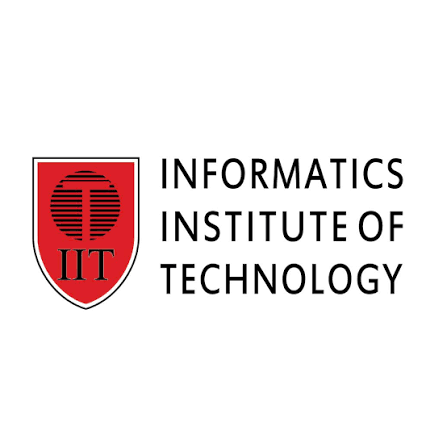

INFORMATICS INSTITUTE OF TECHNOLOGY (IIT)
(SRI LANKA'S PREMIER PRIVATE HIGHER EDUCATION INSTITUTE FOR IT & BUSINESS)

HISTORY OF IIT (PRIVATE INSTITUTE)
- 1990: Established as the pioneer private higher education institution offering British higher education in Sri Lanka.
- 1997: Partnered with the University of Westminster, UK, to offer internal British undergraduate degrees.
- 2005: Expanded postgraduate education offerings, including specialized Master's programs in IT and Data Science.
- Present: Leading non-state (Private) higher education institute producing high-caliber IT and Business graduates.
AVAILABLE FACULTIES (PRIVATE DEGREE PROGRAMS)
- School of Computing – පරිගණක විද්යා අධ්යයනාංශය
- School of Business – ව්යාපාර අධ්යයනාංශය
- Postgraduate Studies Division – පශ්චාත් උපාධි අධ්යයනාංශය
GO TO OFFICIAL WEBSITE OF IIT (PRIVATE)
GO TO HOME PAGE